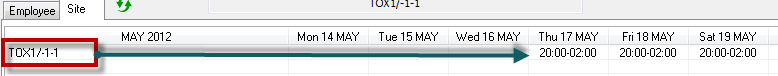
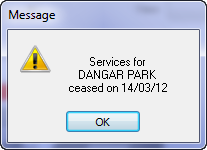
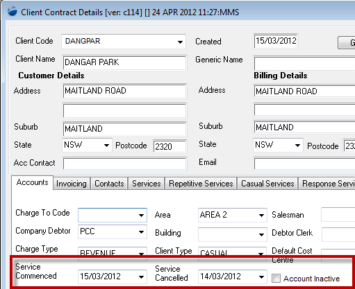
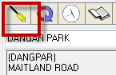
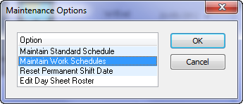
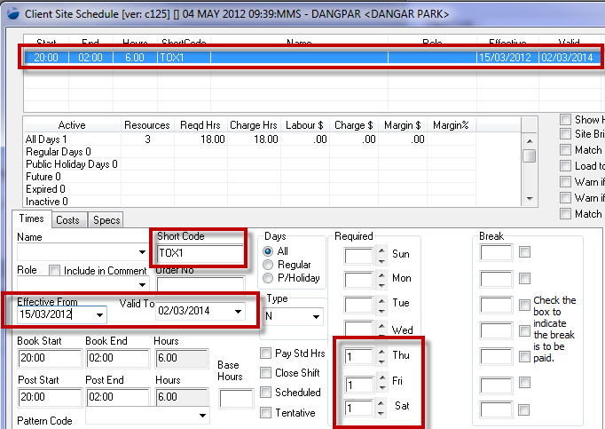

Home > Helpdesk

Tutorial
I cannot remove the display of random schedules whilst working on the scheduling workbench. |
|
Introduction
The customer complaint relates to display similar to the following:

What you're seeing here is the short code TOX1/1-1 (TOX1 1 of 1). Question is where is this coming from.
Top of Page
Step 1
In the investigation of this particular enquiry from the client, the site given as the problem was "DANGAR", and the first thing that struck us whilst investigating the problem, was the following error message when the site was opened on the scheduling workbench.
 The message is telling you that the site should not be being rostered at if the services have expired (the call was taken on 04/05/12). So, to investigate where this is coming from, open the client contracts record, and on the Accounts tab:

The thing to note here is the invalid set up.
- The service is cancelled on the day prior to its commencement.
So, this has to be corrected to either the site is active or its not.
- The other note to take away is that, irrespective of the service cancelled date (to which the user is being warned, when they open the scheudling workbench), the "Account Inactive" is not set, and hence the account is still available for rostering.
To remove the site from the list of rostering sites, check the Account Inactive box.
Top of Page
Where is the display coming from / why?
Whilst you're on the scheduling workbench, you can get to the setup of the short-code by following these steps:
 Select the icon as indicated, which will give you a further menu something like the following:  Select the (Maintain Work Scheduled) item as shown
Top of Page
Explanation
Looking at the screen, this is what you have configured for the site DANGAR
- a shift with a short code of "TOX1" - serves to distinguish the scheduling workbench display when you have more than one shift defined.
- The shift is for the time period 20.00 - 02.00, on every Thu, Fri & Sat.
- The shift requires 1 employee per shift
- The shift schedule commences '15/03/2012' and is valid to '02/03/2014'. What this means is that the shift with a short code of TOX1 will continue to automatically appear on the scheudling workbench until 02/03/2014.
- If you want to stop the display becuase the shift specification (dates and times) has changed, then change the 02/03/2014 to a date past. This has the effect of cancelling the shift.
- Then define a new shift (do not delete this one, terminate it as per the above note) if the times have changed.
- Otherwise, if you don't want a standard shift then don't create a new one once you've cancelled the current one.

Top of Page
See Also
 PowerForce Controls PowerForce Controls
|